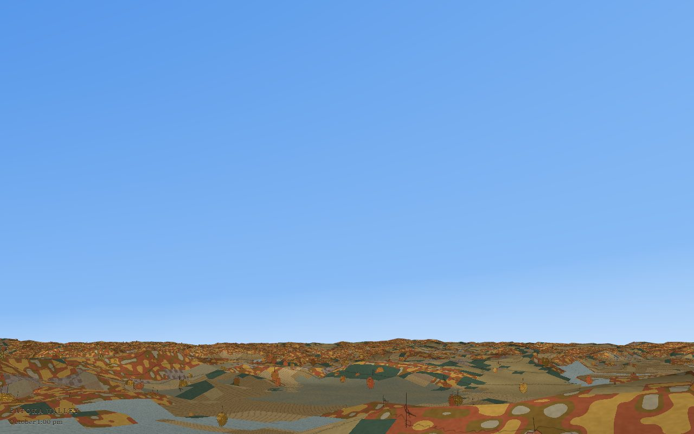

A drawn flyover of the Patoka River valley in Dubois County, Indiana. Drag to look around, pinch or scroll to zoom, and use Reset view to return to the opening look.
Patoka Valley

This view needs WebGL. A still engraving of the valley is shown instead.